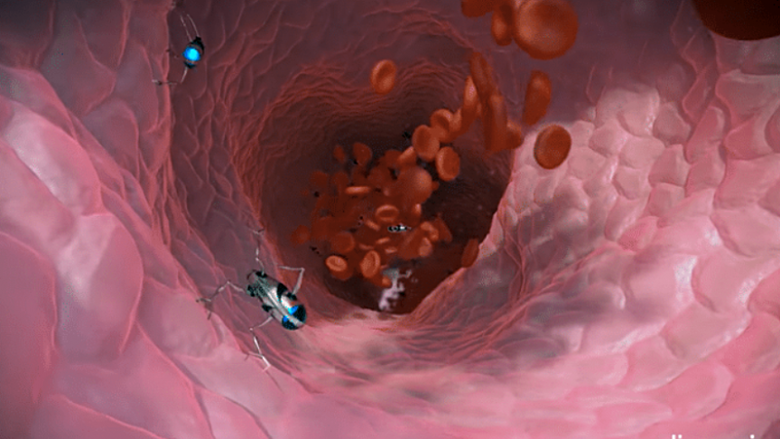

In cigarettes there is tobacco, a plant that has Nicotine, a super addictive substance. They have many dangerous substances inside of them, one of them being tar, which is a sticky substance.
Smoking can cause really harsh effects such as different types of cancer, and difficulty of breathing. Breathing becomes difficult from the tar
The reason why it is so hard to quit smoking is because it has nicotine, the super addictive substance. If you try to quit it will be very hard because they will feel a withdrawal. They can feel anxious and restless.
This Producted is for people who stop smoking but still suffer from the difficulty of breathing. This product is not for people who are continuing to smoke, we do not people to use this product help people that are still smoking, smoke more. These products are meant to be used in hospitals, if you stopped smoking and have difficult breathing, please go to your doctor, and make an appointment to a hospital where they will use the product and remove the difficulty of breathing that you are facing.
The purpose of us sending you the message is that, so many people quit smoking because they know it's a bad thing to do, but they still have a lot of difficulty breathing from all of that tar inside of the lungs. So many people need this help, therefore we are informing the public of this new invention.
This product has nanobots, they are robots but very small. The Nano Bot will enter the mouth and go through the throat, then they will arive into the lungs. Once they are inside of the lungs, the nanobots will grab a peice of tar inside. They will retract the tar and exit there way out of the lungs. After leaving the mouth, the nanobot will go to its station, where there is a sterilizer and evaporator. The tar will get sterilized and then evaporated.
